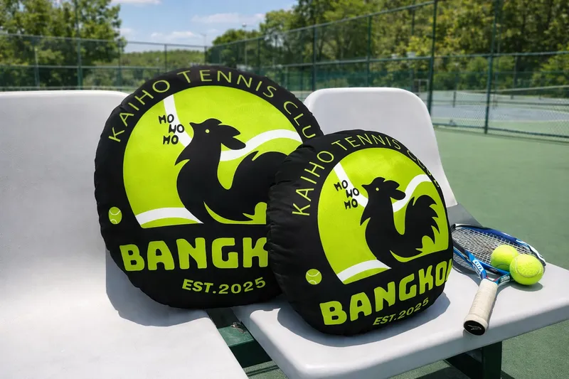
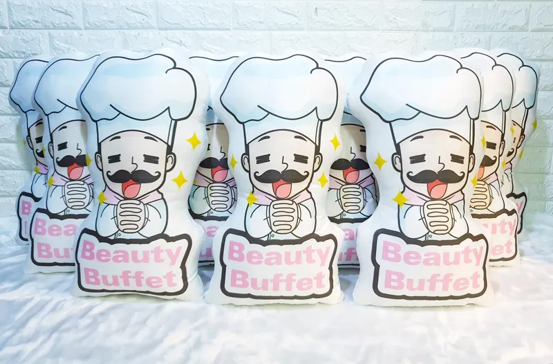
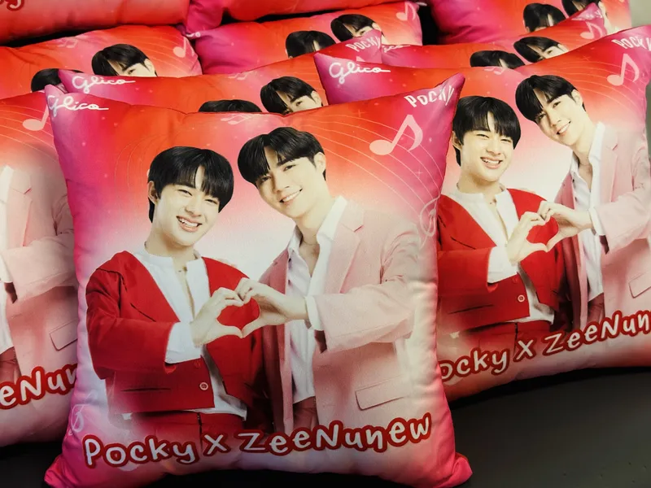
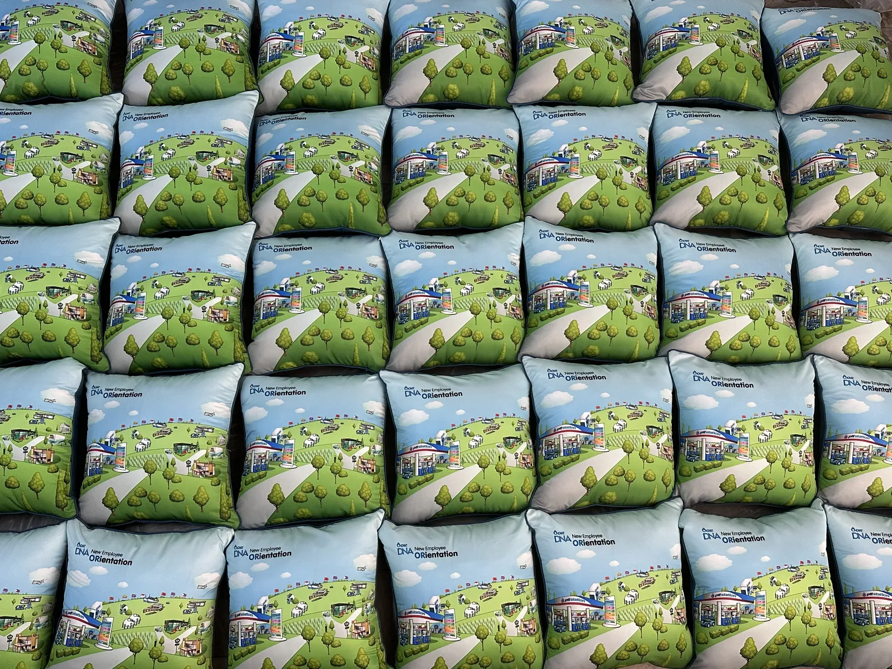

หมอนสกรีนโลโก้ 2026: ของพรีเมียมแจกลูกค้าที่ไม่โดนทิ้ง พร้อม 5 สิ่งต้องเช็กก่อนสั่ง
ของพรีเมียมส่วนใหญ่จบชีวิตในลิ้นชัก — ปากกา พวงกุญแจ ร่มที่แจกกันเกร่อ แต่หมอนสกรีนโลโก้ต่างออกไป เพราะมันไปอยู่บนโซฟาบ้านลูกค้า บนเก้าอี้ออฟฟิศ หรือในรถ ที่ที่โลโก้ของคุณถูกเห็นทุกวัน บทความนี้สรุปจากประสบการณ์ผลิตหมอนโลโก้ให้ทั้งธนาคาร แบรนด์เครื่องสำอาง ชมรมกีฬา และแฟนคลับศิลปิน ว่างานแบบไหนเหมาะกับหมอนแบบไหน และต้องเช็กอะไรบ้างก่อนสั่งผลิตจำนวนมากค่ะ
หมอนสกรีนโลโก้เหมาะกับงานแบบไหน

งานที่ลูกค้าสั่งหมอนโลโก้กับเราบ่อยที่สุดมี 4 กลุ่ม:
1. ของพรีเมียมแจกลูกค้า — ธนาคาร ประกัน อสังหาฯ นิยมมาก เพราะเป็นของแจกที่ "ได้ใช้จริง" ลูกค้ารับแล้วไม่รู้สึกว่าเป็นขยะโฆษณา
2. ของแจกอีเวนต์และงานเปิดตัว — แจกในงานแล้วคนถือเดินทั้งงาน กลายเป็นป้ายโฆษณาเคลื่อนที่ ยิ่งทรงไดคัทน่ารัก คนยิ่งถ่ายรูปลงโซเชียล
3. merch ศิลปินและของแจกแฟนคลับ — แฟนคลับทำหมอนรูปศิลปินแจกในงานเบิร์ธเดย์โปรเจกต์ หรือขายระดมทุน เป็นงานที่เราผลิตประจำ
4. ของที่ระลึกชมรม รุ่น และทีม — หมอนโลโก้ชมรมกีฬา ของที่ระลึกงานเกษียณหมู่ หรืองานคืนสู่เหย้า สั่งหลักสิบใบก็คุ้มแล้ว
เลือกทรงไหนดี — เหลี่ยม กลม หรือไดคัทมาสคอต

หมอนเหลี่ยม คือตัวเลือกมาตรฐาน พื้นที่สกรีนเยอะ ใส่โลโก้ + สโลแกน + ลวดลายแบรนด์ได้เต็มที่ งบต่อใบต่ำสุด เหมาะกับงานแจกจำนวนมาก (ดูราคาที่หน้าหมอนสกรีนรูป)
หมอนทรงกลม โดดเด่นกว่าเวลาวางรวมกัน เหมาะกับโลโก้ทรงกลมอย่างตราชมรม ตราสมาคม ได้ฟีลของที่ระลึกพรีเมียมขึ้นมาอีกขั้น

หมอนไดคัทมาสคอต คือตัวท็อปของความน่าจดจำ — ตัดเย็บตามรูปทรงมาสคอตหรือคาแรกเตอร์ของแบรนด์จริง ๆ ยัดใยนุ่มเต็มใบ ซิปปิดก้นเก็บงานเนียน คนรับมักเอาไปตั้งโชว์มากกว่าใช้หนุน ถ้าแบรนด์มีมาสคอตอยู่แล้ว แนะนำทรงนี้เลยค่ะ (ดูรายละเอียดที่หน้าหมอนไดคัท)

5 สิ่งต้องเช็กก่อนสั่งผลิตจำนวนมาก
- ไฟล์โลโก้คมพอไหม — ไฟล์ AI, PDF หรือ PNG พื้นโปร่งความละเอียดสูงให้งานคมที่สุด ถ้ามีแค่รูปจากเว็บ แจ้งมาก่อน เราช่วยจัดไฟล์ให้ได้
- ขอดูแบบก่อนผลิตเสมอ — ร้านที่ดีต้องส่งแบบ (mockup) ให้ยืนยันก่อนขึ้นงานจริงทุกครั้ง โดยเฉพาะงานหลักร้อยใบ พลาดแล้วแก้ไม่ได้
- สีโลโก้บนผ้าไม่เหมือนบนจอ — ถ้าแบรนด์เข้มงวดเรื่องสี (มีโค้ด Pantone) แจ้งตั้งแต่แรก หรือสั่งตัวอย่าง 1 ใบก่อนสั่งล็อตใหญ่
- เผื่อเวลาให้พอ — งานทั่วไปเสร็จใน 3–4 วันหลังยืนยันแบบ แต่งานจำนวนมากต้องเผื่อ 1–2 สัปดาห์ก่อนวันงาน บอกวันงานตั้งแต่แรกให้ร้านจัดคิว
- เทียบราคาที่ "ราคาต่อใบตามจำนวน" — งานจำนวนมากราคาต่อใบถูกลงเป็นขั้น ขอใบเสนอราคาตามจำนวนจริง อย่าเทียบจากราคาปลีกหน้าเว็บอย่างเดียว
ราคาเริ่มต้นและขนาดแนะนำ
ราคาปลีกเริ่มต้น: หมอนเหลี่ยม 15×15 นิ้ว ใบละ 399 บาท (โปรสั่ง 2 ใบเหลือใบละ 350) ส่วนหมอนไดคัทเริ่ม 333 บาท — สำหรับงานองค์กรหรือแจกอีเวนต์จำนวนมาก ราคาต่อใบถูกลงตามจำนวน ขนาดยอดนิยมของงานแจกคือ 15×15 นิ้ว เพราะถือสะดวก ใส่ถุงแจกง่าย และคุมงบได้ แจ้งจำนวน + วันงาน + ไฟล์โลโก้มาทางไลน์ รับใบเสนอราคาได้เลยค่ะ

สรุป — ของพรีเมียมที่ดีคือของที่ลูกค้า "เก็บไว้ใช้"
หมอนสกรีนโลโก้ชนะของแจกทั่วไปตรงที่มันอยู่ในบ้านลูกค้าได้เป็นปี ๆ ไม่ใช่ในถังขยะหลังจบงาน ร้านอุ่นไอรักผลิตเองทุกขั้นตอน ช่วยจัดไฟล์โลโก้ ส่งแบบให้ยืนยันก่อนผลิต และแจ้งกำหนดส่งชัดเจนตั้งแต่ต้น เหมาะกับงานที่มีวันจัดแน่นอนค่ะ
ส่งโลโก้ + จำนวน + วันงาน มารับใบเสนอราคาฟรี
ทำแบบให้ดูก่อนตัดสินใจ ไม่มีค่าใช้จ่ายค่ะ
แอด LINE @aunirakคำถามที่พบบ่อยเรื่องหมอนสกรีนโลโก้
สั่งขั้นต่ำกี่ใบ
เริ่มได้ตั้งแต่ 1 ใบสำหรับทำตัวอย่าง งานแจกจำนวนมากยิ่งสั่งเยอะราคาต่อใบยิ่งถูกลง แจ้งจำนวนและวันงานมาทางไลน์เพื่อรับใบเสนอราคาค่ะ
ต้องใช้ไฟล์โลโก้แบบไหน
ดีที่สุดคือ AI, PDF หรือ PNG พื้นหลังโปร่งความละเอียดสูง ถ้ามีแค่รูปจากเว็บหรือนามบัตร ทีมงานช่วยจัดไฟล์ให้ได้ และส่งแบบให้ยืนยันก่อนผลิตทุกครั้งค่ะ
ผลิตจำนวนมากใช้เวลากี่วัน
งานทั่วไป 3–4 วันหลังยืนยันแบบ งานจำนวนมากแนะนำเผื่อ 1–2 สัปดาห์ก่อนวันงาน และแจ้งวันงานตั้งแต่แรกเพื่อให้จัดคิวผลิตทันค่ะ
อ่านต่อ / สินค้าที่เกี่ยวข้อง
บทความ: ของขวัญวันเกษียณ + คำอวยพร 20 แบบ
บทความ: ของขวัญรับปริญญา ไม่ซ้ำใคร
บทความ: ของขวัญแต่งงาน ซึ้งใจคู่บ่าวสาว
บทความ: ของขวัญวันเกิด ไม่ซ้ำใคร
หมอนอิงสกรีนรูป เริ่ม 399.- · หมอนไดคัท เริ่ม 333.- · ผ้าห่มสกรีนรูป เริ่ม 690.- · แก้วสกรีน เริ่ม 200.-